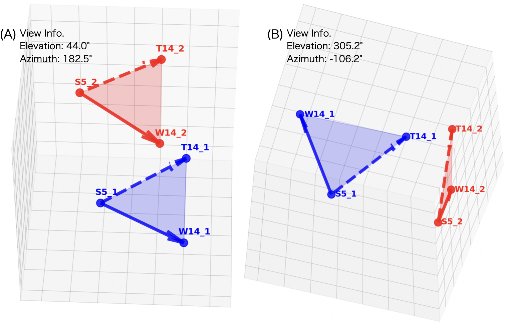
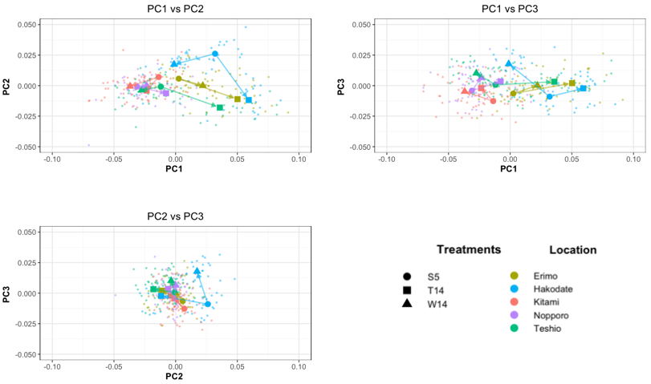
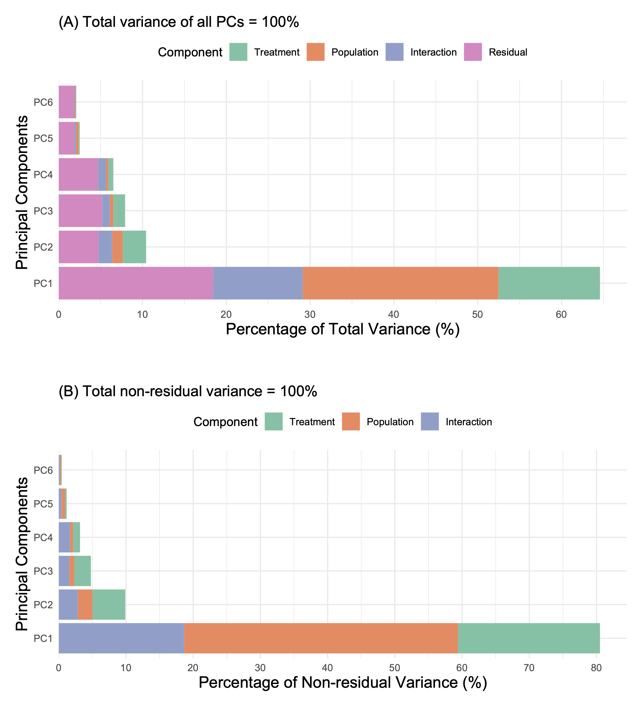
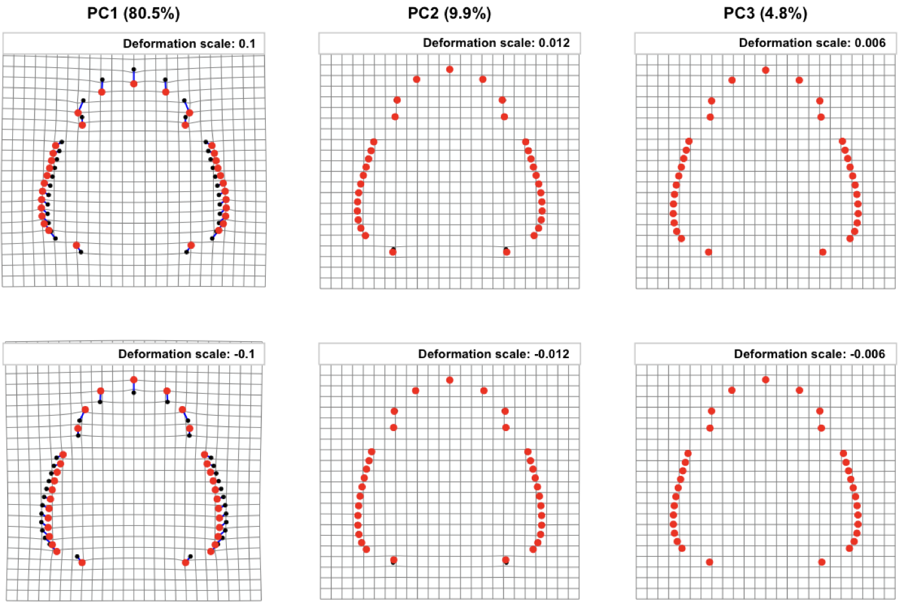

We employed landmark-based geometric morphometrics for analysis of shape and size variation in our experimental setting. Landmark-based geometric morphometrics emerged between the late 1970s and the 1990s (Kendall 1977, 1984; Bookstein 1991; Rohlf 1999) and was methodologically consolidated in the early 2000s (Zelditch et al. 2004). The field continues to generate substantial debate (e.g., Collyer and Adams 2013; Adams 2014; Collyer et al. 2015; Denton and Adams 2015; Mitteroecker and Schaefer 2022). Persistent debates surround concepts and methodologies: whether landmark points adequately capture an object's 'shape' characteristics (Bookstein 1991; MacLeod 2013), whether the use of 2D projections of 3D objects is subject to conditions and limitations (Cardini 2014), and whether conceptual and technical issues regarding semilandmarks and landmarks have been adequately resolved (Bookstein 1991, 1997; Perez et al. 2006; Gunz and Mitteroecker 2013; MacLeod 2013, 2017; Drumheller et al. 2016). Various researchers have also raised statistical methodology concerns (Mitteroecker and Bookstein 2011; Collyer et al. 2015; Bookstein 2017, 2019; Cardini et al. 2019; Cardini and Polly 2020; Rohlf 2021).
The landmark-based approach involves important epistemological issues. By treating 'shape' —an abstract epistemological concept— as a set of landmark points that bear no direct relation to the reality of 'shape' itself, it raises what Bhaskar (1975) calls the "epistemic fallacy" (confusing how we know things with how they exist). This is reminiscent of other episodes in the history of science: ancient and medieval scholars posited imaginary constructs such as 'epicycles' and 'equants' to explain planetary orbits, debating their configurations regardless of whether such constructs actually existed (Poskett 2022). Given this philosophical background regarding the nature of geometric morphometric research, it should be clear that analytical frameworks are not direct representations of reality, but rather tools for understanding and practical application. Therefore, it would be reckless hubris to claim that there is only one legitimate integrative method among the various disputed approaches. Recognizing these limitations, we adopt a set of concepts and analytical methods widely recognized in evolutionary biology that, despite ongoing technical debates, remain empirically sound and practically useful for addressing our research questions.
However, there is no generally agreed-upon method for comparing context-dependent developmental shape changes across populations, such as diet-induced DRN variation among populations as examined in this study. This Appendix describes the process of exploring appropriate metrics for analyzing developmental shape changes and their variation across populations.
The exploration consists of the following steps: A1. Analytical methods for testing overall hypotheses regarding 'Treatment' and 'Population' factors, employing generalized Procrustes coordinates that retain complete shape information from landmark-based geometric morphometrics. A2. Potential limitations of analysis arising from the high dimensionality of generalized Procrustes coordinate shape space. A3–A5. Exploration and determination of appropriate metrics for analyzing partial or specific hypotheses. A6. Visualization methods for shape variation using the determined metrics.
In statistical analysis, shape data defined by generalized Procrustes coordinates of
Source data file: Symm.BE.GPA.AllInd.txt
x# Data loadingsetwd('/Users/.../...') # Path to the location of the data filedata=read.delim("Symm.BE.GPA.AllInd.txt", head=T) # data file# Data preparationshape_vars <- grep("Symm", names(data), value = TRUE)shape_data <- as.matrix(data[, shape_vars])
xxxxxxxxxx# Required librarieslibrary(geomorph)library(RRPP)library(ggplot2)
# Fit the full model. 'Treatments' is a fixed effect and 'Location' (Population)# a random effect. Note that procD.lm has no argument for declaring a factor# random: the fixed/random distinction is made when the ANOVA table is# constructed, by specifying the error term for each effect in anova().fit_proc <- procD.lm(shape_data ~ Treatments + Location + Treatments:Location, data = data, iter = 999, RRPP = TRUE, print.progress = TRUE, effect.type = "F", SS.type = "I")
# ANOVA table for the mixed model. The three entries of 'error' correspond to# the three terms of the model in order. With 'Location' random, the effect of# 'Treatments' is tested against the Treatments:Location interaction rather than# against the residual mean square, so that a diet effect is detected only if it# is consistent across populations. The remaining two terms are tested against# the residual mean square.anova_result <- anova(fit_proc, error = c("Treatments:Location", "Residuals", "Residuals")) Two changes were made to this section after submission.
First, random.effect = "Location" was passed to procD.lm(). That argument does not exist in procD.lm(); it was silently ignored, so every term was tested against the residual mean square and the intended mixed-model specification was not in force. The mixed-model tests are now obtained by specifying the error terms in anova().
Second, the block reproduced below adjusted the residual and total degrees of freedom for the four degrees of freedom removed by the two-dimensional Procrustes superimposition, and recomputed the mean squares and F ratios from the adjusted values. This block has been removed. The adjustment is unnecessary here: the dimensionality of the shape space enters the numerator and denominator of every F ratio identically and cancels, and significance is assessed by permutation of residuals rather than against a parametric F distribution, so neither the F ratio nor the P value depends on it. The degrees of freedom now reported in Table 1 of the main text are those of the experimental design, without this adjustment.
The superseded code was:
xxxxxxxxxx# Required librarieslibrary(geomorph)library(RRPP)library(ggplot2)
# Model specifying a random effect in procD.lm from 'geomorph'fit_proc <- procD.lm(shape_data ~ Treatments + Location + Treatments:Location, data = data, iter = 999, RRPP = TRUE, print.progress = TRUE, effect.type = "F", SS.type = "I", random.effect = "Location")# Basic ANOVA resultsanova_result <- anova(fit_proc) # ANOVA table
# The ANOVA table from anova(fit_proc) does not reflect the degrees of freedom lost due to GPA (a loss of df = 4) in the Residuals Df.# The following code corrects the ANOVA results to account for this.
################################################################ Create corrected ANOVA table# Start# Degrees of freedom lost due to GPA (4 for 2D data)gpa_df_loss <- 4
# Get the original ANOVA table and convert it to a data frameanova_df <- as.data.frame(anova_result$table)
# Correct the degrees of freedom# Correct the Residuals Dfanova_df$Df[4] <- anova_df$Df[4] - gpa_df_loss # 317 -> 313
# Also correct the Total Dfanova_df$Df[5] <- anova_df$Df[5] - gpa_df_loss # 331 -> 327
# Recalculate Mean Squares (MS = SS/Df)anova_df$MS[4] <- anova_df$SS[4] / anova_df$Df[4]
# Recalculate F-values (as needed)# Divide the MS of each effect by the new Residual MSfor (i in 1:3) { anova_df$F[i] <- anova_df$MS[i] / anova_df$MS[4]}
# Recalculate p-values (assuming Z-scores are not affected)# Since p-values are based on permutations (iter), they cannot be simply recalculated from the F-distribution.# Note: When the Df correction is small, the impact on p-values is expected to be minimal.
# Display the corrected ANOVA tablecat("Corrected ANOVA table (accounting for Df loss from GPA):\n")print(anova_df)
# For comparison, also display the original ANOVA tablecat("\nOriginal ANOVA table (not accounting for Df loss from GPA):\n")print(anova_result$table) # <--- ANOVA Table for GPA data on a hypersphereAlthough some researchers have advocated for analytical methods such as pairwise and trajectory analysis implemented in RRPP using the GEOMORPH functions "pairwise" and "trajectory", which compare distances and angles among multiple objects in high-dimensional generalized Procrustes coordinate space following an overall hypothesis test (Collyer and Adams 2013; Collyer et al. 2015), we recognized that this approach was not suitable for our intended analysis of specific hypotheses and involved potential limitations. Consequently, we explored methods to extract information appropriate for such specific hypothesis analyses from the high-dimensional generalized Procrustes coordinate space.
Generalized Procrustes coordinate shape data comprising
In high-dimensional shape spaces, comparing and evaluating the characteristics of multiple vector sets involves substantial geometric complexity. We will explain how this causes difficulties in comparing different sets of induced developmental shape trajectories. For example, assessing whether the relationship between vector pair S5_1→W14_1 and S5_1→T14_1 shares the same intrinsic properties as the relationship between vector pair S5_2→W14_2 and S5_2→T14_2 is difficult to determine. This difficulty arises because the subspaces (planes) in which each vector set is embedded do not necessarily coincide with one another.
We can understand that, from the simplified example in a three-dimensional space (Figure A2), which represents a dimensionally reduced analogue of the minimal model case for shape mapping in landmark-based geometric morphometrics.

Even in a schematic quasi-shape space (Figure A2) of much lower dimension than the actual shape space, where the differences or similarities between two vector sets are examined, substantial geometric complexity persists. As this example illustrates, in actual high-dimensional shape space, when the subspaces embedding different sets of vectors are ambiguous in their similarity or distinctness, determining whether these vector sets have geometrically similar or dissimilar properties, and interpreting their biological significance, becomes problematic.
This geometric complexity reveals a fundamental issue: evaluating morphological congruence and divergence in high-dimensional generalized Procrustes space requires the integration of complex geometric information. Within individual subspaces, apparent similarities and differences between patterns are critically dependent on the geometric structure of the embedded subspace. Moreover, we must recognize that directional and distance movements in shape space derived from vectorized landmark coordinates do not directly supply information regarding patterns of shape variation in physical space or their biological interpretation. Therefore, researchers cannot derive clear biological conclusions from high-dimensional shape data unless they explicitly account for the structural relationship between morphology itself and the Procrustes space onto which it is mapped.
To overcome the difficulty in identifying geometric differences or similarities between two or more vector sets using information in all spatial directions of the high-dimensional shape space, it is required to discover a shared subspace of all vector sets that contains summary geometric information, facilitating a comparative analysis.
We will examine two methods, PCA and bgPCA, to discover an appropriate shared subspace, given that we are analyzing the shape development trajectories S5 → W14 and S5 → T14 from multiple observations at S5, W14, and T14 across populations.
Principal Component Analysis (PCA) extracts subspaces by maximizing the total variance across all observed samples, sequentially identifying orthogonal axes that capture the largest remaining variance. By construction, the resulting principal components are orthogonal and uncorrelated. However, this variance-maximization approach does not prioritize biological or experimental distinctions. The extracted subspace reflects the dominant patterns of morphological variation present in the dataset, regardless of group structure; these patterns may or may not correspond to biologically meaningful group differences or 'Treatment' effects.
In contrast, between-group PCA (bgPCA) constructs subspaces specifically from group mean coordinates, focusing exclusively on inter-group morphological differences. By prioritizing mean-level separation between groups, bgPCA enhances the detection of group-specific morphological divergence and patterns that may be biologically meaningful. However, a critical limitation emerges when individual sample points are projected onto bgPC axes: the resulting bgPC scores retain non-zero covariance structures. Consequently, features captured by different bgPC axes cannot be independently interpreted, as they exhibit statistical interdependence. Moreover, bgPC axes do not necessarily maximize the total variance structure of the original shape data, potentially missing important within-group variation or overall geometric structure of morphological change.
For studies investigating 'Treatment' and 'Population' effects on organismal form, (1) bgPCA provides a more focused extraction of the relevant morphological subspace, (2) while traditional PCA offers complementary insights into overall shape variation structure. The mathematical properties reflected in these features can be evaluated as (1) the disadvantage of non-orthogonality of the data distribution in bgPC coordinates and (2) the advantage in terms of the degree of separation between groups in bgPCA compared to PCA. We diagnose these points.
In bgPCA, the bgPC scores for all samples are not necessarily distributed orthogonally to the bgPC axis, and the off-diagonal elements of the covariance matrix are not degenerate to zero. We assess the degree of covariance generation and variance reduction due to deviations from the orthogonal distribution along the bgPC axis for our data.
Lets
We evaluate non-orthogonality by two measures, the Variance retention ratio (
● Variance retention ratio (
The numerator represents the sum of variances of all bgPC components, which equals the trace of the covariance matrix,
● Weighted Orthogonality Retention (
It measures how much orthogonality is preserved when component importance is weighted by variance contributions. While the variance retention ratio compares total variances (bgPC variance sum vs. original data variance),
This contrasts sharply with the variance retention ratio, which focuses on total information preservation.
We compared the group separation performance of the 'Treatment' and 'Population' factors between bgPCA and traditional PCA using our dataset.
The separation performance evaluation employs a one-way ANOVA framework to quantify how effectively each principal component axis discriminates between experimental groups. For each component axis and grouping factor ('Treatment' or 'Population'), the analysis calculates F-ratios by dividing the between-group mean square by the within-group mean square, where the between-group variance reflects how much group means differ from the overall mean, and the within-group variance captures variability within each group. Higher F-ratios indicate better separation, as they represent cases where groups are well-separated relative to their internal scatter. The comparison between PCA and bgPCA involves computing F-ratios for corresponding axes (PC1 vs bgPC1, PC2 vs bgPC2, etc.) and forming improvement ratios by dividing bgPCA F-ratios by PCA F-ratios. Individual axis improvements are weighted by each component's variance contribution, ensuring that separation gains in dominant components receive proportionally greater influence than those in minor components. This weighting scheme acknowledges that, for example, enhanced discrimination in a component explaining 60% of variance has greater practical relevance than improvements in a component explaining only 3% of variance, thereby evaluating bgPCA's performance relative to traditional PCA based on variance-weighted considerations.
| Axis | PCA Treatment | PCA Population | bgPCA Treatment | bgPCA Population | Improvement Treatment | Improvement Population | bgPC Variance Weight |
|---|---|---|---|---|---|---|---|
| 1 | 40.067 | 57.977 | 43.980 | 58.415 | 1.098 | 1.008 | 64.7% |
| 2 | 57.911 | 17.248 | 53.100 | 27.930 | 0.917 | 1.619 | 10.3% |
| 3 | 33.229 | 10.024 | 32.259 | 10.995 | 0.971 | 1.097 | 7.7% |
| 4 | 17.676 | 8.785 | 10.812 | 3.327 | 0.612 | 0.379 | 6.8% |
| 5 | 8.337 | 15.188 | 5.991 | 18.767 | 0.719 | 1.236 | 2.3% |
| 6 | 4.615 | 6.809 | 11.490 | 9.953 | 2.489 | 1.462 | 2.0% |
The analysis reveals inconsistent performance across individual axes, with bgPCA performing worse than PCA on several components (Axes 2, 3, 4, and 5 for Treatment; Axis 4 for Population). While Axis 4 shows substantial degradation for both factors (0.612× for Treatment, 0.379× for Population), its relatively modest variance contribution (6.8%) limits the practical impact of this decline.
To assess overall performance, individual axis improvements were weighted by their variance contributions and summed to create a composite measure. This variance-weighted assessment revealed that bgPCA provides only marginal advantages over PCA: 5.3% improvement for Treatment discrimination and 5.2% for Population discrimination. These modest gains suggest that, despite bgPCA's theoretical focus on between-group separation, its practical benefit over traditional PCA is limited for this dataset when considering the full component spectrum.
Orthogonality: Principal Component Analysis (PCA) maintains orthogonal component axes by mathematical construction. In contrast, between-group PCA (bgPCA) exhibits variable orthogonality depending on the metric used. When evaluated using variance-weighted orthogonality retention, bgPC scores show degraded orthogonality (87.6% retention), indicating that components are not fully independent. This degradation arises from bgPCA's focus on between-group separation rather than variance maximization, resulting in non-orthogonal geometric relationships among bgPC axes.
Separation: The separation effectiveness of bgPCA relative to PCA varied inconsistently across components. While bgPCA showed improvements on Axis 1 (1.098× for Treatment, 1.008× for Population), it exhibited substantial degradation on Axes 4 and 5, particularly for Treatment discrimination (0.612× and 0.719×, respectively). When all axes were considered together using variance-weighted averaging, bgPCA provided only marginal improvements: 5.3% for Treatment and 5.2% for Population. These minimal gains do not justify the adoption of bgPCA over traditional PCA.
Conclusion: Based on a comprehensive analysis of both orthogonality and separation performance, traditional PCA is more appropriate for this dataset than bgPCA. Although bgPCA theoretically targets between-group separation, its practical benefits are negligible for the current data. Moreover, bgPCA's reduced orthogonality compromises the interpretability of individual components, as their independence cannot be assumed. Therefore, we preferred PCA over bgPCA, as it provides mathematically rigorous, orthogonal component axes while achieving comparable group separation with greater simplicity and interpretability.
We are exploring appropriate subspaces within the generalized Procrustes shape space to conduct comparative analyses of induced shape development—specifically, S5 to W14 and S5 to T14—across populations. To identify these subspaces and quantify shape changes, we employed Principal Component Analysis (PCA) as an initial exploratory approach. PCA was performed on the Generalized Procrustes shape dataset, and for each PC score, the mean scores by 'Population' and 'Treatment' were obtained.
As can be inferred from the schematic example in Figure A2, it is difficult to understand the developmental shape changes induced by two different diets across different populations by examining the respective vector lengths and directional angles of multiple vectors, and the included angles between the S5→W14 and S5→T14 vectors within each population in the subspace derived from orthogonal projection of generalized Procrustes shape data onto principal component axes. In fact, for each of the projected planes PC1-PC2, PC1-PC3, and PC2-PC3, the lengths, azimuth angles, and intercept angles of each S5→W14 and S5→T14 vector, and the included angles between S5→W14 and S5→T14 vectors in each population were diverse (Figure A4).

Figure A4 shows the magnitude and directional angles of developmental shape changes across multiple subspaces formed by the dominant principal components to identify characteristic patterns within each subspace. However, this analysis revealed that consistent, unified information could not be extracted across the multiple subspace representations. This demonstrates that the structure of shape variation is inherently multidimensional, and no single low-dimensional projection can capture the unified structure of shape variation.
To partition the morphological variation captured by each principal component axis into distinct factors, we conducted a variance component analysis using linear mixed models. For each principal component score, we fitted a mixed model incorporating 'Treatment' as a fixed effect, 'population (Location)' as a random effect, and their interaction as an additional random term. This model structure allows us to decompose the total variance into four orthogonal components: (1) Treatment variance, representing systematic morphological differences attributable to experimental feeding conditions; (2) Population variance, capturing population-level differences; (3) Interaction variance, reflecting population-specific responses to treatment; and (4) Residual variance, representing unexplained within-group variation.
Variance components were extracted from the mixed model using the estimated variance-covariance matrix. For each PC axis, we calculated the proportion of variance explained by each component relative to the total variance within that axis, yielding contribution ratios for 'Treatment', 'Population', 'Interaction', and 'Residual' effects. These ratios were then scaled by the variance explained by each principal component to estimate the contribution of each component to the total morphological variation across the entire dataset.
Two weighting schemes were applied to assess the relative importance of variance components. In Case 1, each PC axis's variance contributions were presented as percentages of the total dataset variance, directly reflecting the geometric significance of each component's effects. In Case 2, residual variance was excluded, and non-residual components ('Treatment', 'Population', 'Interaction') were rescaled to 100%, emphasizing systematic effects while minimizing the influence of noise. This analysis reveals how 'Treatment' effects, population differences, and their interactions are distributed across the PC spectrum, clarifying which axes carry the most biologically meaningful systematic variation.
(A): Total variance of all PCs = 100%
| PC | PC_total | Treatment | Population | Interaction | Residual |
|---|---|---|---|---|---|
| PC1 | 64.59 (100) | 12.11 (18.75) | 23.36 (36.17) | 10.70 (16.57) | 18.41 (28.51) |
| PC2 | 10.43 (100) | 2.80 (26.79) | 1.26 (12.11) | 1.62 (15.51) | 4.76 (45.58) |
| PC3 | 7.92 (100) | 1.41 (17.79) | 0.43 ( 5.44) | 0.90 (11.38) | 5.19 (65.39) |
| PC4 | 6.52 (100) | 0.60 ( 9.16) | 0.26 ( 4.04) | 0.96 (14.70) | 4.70 (72.10) |
| PC5 | 2.50 (100) | 0.13 ( 5.16) | 0.33 (13.28) | 0.22 ( 8.06) | 1.83 (72.96) |
| PC6 | 2.10 (100) | 0.06 ( 2.98) | 0.10 ( 4.69) | 0.10 ( 4.69) | 1.84 (87.63) |
(B): Total non-residual variance = 100%
| PC | PC_total | Treatment | Population | Interaction |
|---|---|---|---|---|
| PC1 | 80.51 | 21.11 | 40.74 | 18.66 |
| PC2 | 9.90 | 4.87 | 2.20 | 2.82 |
| PC3 | 4.78 | 2.46 | 0.75 | 1.57 |
| PC4 | 3.17 | 1.04 | 0.46 | 1.67 |
| PC5 | 1.18 | 0.23 | 0.58 | 0.38 |
| PC6 | 0.45 | 0.11 | 0.17 | 0.17 |

The variance distribution among the principal components reveals a highly skewed distribution. PC1 dominates the morphometric variation, accounting for approximately 64.59% of total variance, while even the variance explained by the second principal component was a small value of about 10% (Table A5(A) and Figure A5(A)). This pattern indicates that shape variation is primarily captured along a single principal axis of variation. Furthermore, PC1 showed a relatively small proportion of residual variance (28.51%). PC1 shows a relatively balanced distribution of systematic effects, with ‘Population’ effect contributing the largest proportion (36.17%), followed by ‘Treatment’ (18.75%) and 'Interaction' (16.57%) effects (Table A5(A) and Figure A5(A)). The substantial systematic components in PC1 indicate that this primary morphometric axis captures biologically meaningful variation related to both genetic ('Population') and environmental ('Treatment') factors. In contrast, higher-order components (PC2-PC6) show progressively larger residual variance proportions, ranging from 45.58% in PC2 to 87.63% in PC6 (Table A5(A) and Figure A5(A)). This pattern suggests that while these secondary axes contribute to total morphometric variation, they primarily reflect individual-level noise rather than systematic experimental effects.
Analysis of variance, excluding residual variance, reveals further characteristics between PCs and the systematic effects. PC1 dominates the systematic variance structure, accounting for 80.51% of all non-residual variation (Table A5(B) and Figure A5(B)). Within PC1, 'population' effects contribute the largest proportion (40.74%), followed by 'Treatment' effects (21.11%) and Interaction effects (18.66%)(Table A5(B) and Figure A5(B)). This distribution indicates that population-level differences represent the primary source of systematic shape variation, while treatment responses and population-specific treatment interactions also contribute substantially. This decomposition demonstrates that when individual-level noise is excluded, shape responses to experimental treatments and population differences are highly structured along a primary gradient of variation, with secondary axes contributing progressively less to systematic biological effects. This concentration indicates that the primary axis of shape variation captures the majority of biologically meaningful changes, while the remaining components contain little shape change information and gradually decrease in their contributions.
This pattern suggests that while morphometric shape variation is multidimensional, the biologically meaningful responses to experimental treatment and population differences are concentrated along a primary axis of variation, with secondary axes contributing less to systematic effects. Based on these overall considerations, in order to understand and evaluate the differences in shape development caused by the two different types of food, only the PC1 score will be meaningfully employed, and information on the remaining PC axes will be excluded.
To interpret the biological significance of variation captured by principal component analysis, we visualized shape deformation patterns using thin-plate spline (TPS) deformation grids. This method reconstructs the projections of data samples onto principal component vectors in the generalized Procrustes shape space as landmark coordinates, facilitating the interpretation of biologically meaningful shape patterns.
We primarily focused on PC1, which captured the largest proportion of systematic morphological variation (80.5% of non-residual variance), and examined PC2 and PC3 as secondary components (9.9% and 4.8%, respectively)(Figure A6). For each principal component, we generated deformation grids at positive and negative extremes along each component axis. Deformation visualization scales were proportionally adjusted to each component's non-residual variance contribution: PC1 (scale ±0.1), PC2 (scale ±0.012), and PC3 (scale ±0.006). This proportional scaling ensures that visual emphasis reflects the relative magnitude of morphological variation captured by each component.

These deformation grids reveal a clear hierarchical organization of morphological effects. PC1 (80.5% variance) dominates, exhibiting large-scale deformations affecting overall head shape. PC2 (9.9%) and PC3 (4.8%) show progressively smaller and more localized deformations. This pattern demonstrates that head shape development in response to feeding treatment and population differences is fundamentally governed by a single primary axis of variation, with secondary axes contributing only minor, refined modifications to morphological structure.
Adams, D. C. (2014) Quantifying and comparing phylogenetic evolutionary rates for shape and other high-dimensional phenotypic data. Systematic Biology 63: 166-177.
Adams, D.C. & Collyer, M.L. (2016). On the comparison of the strength of morphological integration across morphometric datasets. Evolution, 70: 2623-2631.
Bhaskar, R. (1975) A Realist Theory of Science. Leeds Books.
Bookstein, F. L. (1991) Morphometric Tools for Landmark Data. Cambridge University Press.
Bookstein, F. L. (1997). Landmark methods for forms without landmarks: Morphometrics of group differences in outline shape. Medical Image Analysis 1: 225–243.
Bookstein, F. L. (2017) A Newly Noticed Formula Enforces Fundamental Limits on Geometric Morphometric Analyses. Evolutionary Biology 44: 522-541.
Bookstein, F. L. (2019) Pathologies of Between-Groups Principal Components Analysis in Geometric Morphometrics. Evolutionary Biology 46: 271-302.
Cardini, A. (2014) Missing the third dimension in geometric morphometrics: how to assess if 2D images really are a good proxy for 3D structures? Hystrix-Italian Journal of Mammalogy 25: 73-81.
Cardini, A., P. O'Higgins, and F. J. Rohlf. (2019) Seeing Distinct Groups Where There are None: Spurious Patterns from Between-Group PCA. Evolutionary Biology 46: 303-316.
Cardini, A., and P. D. Polly. (2020) Cross-validated Between Group PCA Scatterplots: A Solution to Spurious Group Separation? Evolutionary Biology 47: 85-95.
Collyer, M. L., and D. C. Adams. (2013) Phenotypic trajectory analysis: comparison of shape change patterns in evolution and ecology. Hystrix-Italian Journal of Mammalogy 24: 75-83.
Collyer, M. L., and D. C. Adams. (2024) RRPP: Linear Model Evaluation with Randomized Residuals in a Permutation Procedure. R package version 2.1.0.
Collyer, M. L., D. J. Sekora, and D. C. Adams. (2015) A method for analysis of phenotypic change for phenotypes described by high-dimensional data. Heredity (Edinb) 115: 357-365.
Denton, J. S., and D. C. Adams. (2015) A new phylogenetic test for comparing multiple high-dimensional evolutionary rates suggests interplay of evolutionary rates and modularity in lanternfishes (Myctophiformes; Myctophidae). Evolution 69: 2425-2440.
Drumheller, S. K., Wilberg, E. W. & Sadleir, R. W. (2016) The utility of captive animals in actualistic research: A geometric morphometric exploration of the tooth row of Alligator mississippiensis suggesting ecophenotypic influences and functional constraints. Journal of Morphology 277: 866-878.
Gunz, P. & Mitteroecker, P. (2013) Semilandmarks: a method for quantifying curves and surfaces. Hystrix, Italian Journal of Mammalogy 24: 103–109.
Kendall, D. G. (1977) The Diffusion of Shape. Advances in applied probability, 9: 428–430.
Kendall, D. G. (1984) Shape Manifolds, Procrustean Metrics, and Complex Projective Spaces. Bulletin of the London Mathematical Society 16: 81-121.
MacLeod, N. (2013) Landmarks and Semilandmarks: Differences without Meaning and Meaning without Difference. Paleontological Association Newsletter 82: 32-43.
MacLeod, N. (2017) Morphometrics: History, development methods and prospects. Zoological Systematics 42: 4-33.
Mitteroecker, P., & Bookstein, F. L. (2011) Linear discrimination, ordination, and the visualization of selection gradients in modern morphometrics. Evolutionary Biology 38: 100–114.
Mitteroecker, P., and K. Schaefer. (2022) Thirty years of geometric morphometrics: Achievements, challenges, and the ongoing quest for biological meaningfulness. American Journal of Biological Anthropology 178 Suppl 74: 181-210.
Perez, S. I., Bernakm V, & Gonzalez, P. N. (2006) Differences between sliding semi-landmark methods in geometric morphometrics, with an application to human craniofacial and dental variation. Journal of Anatomy 208: 769-784.
Poskett, J. (2022) Horizons: The Global Origins of Modern Science. Viking.
Rohlf, F. J. (1999) Shape statistics: Procrustes superimpositions and tangent spaces. Journal of Classification 16: 197-223.
Rohlf, F. J. (2021) Why Clusters and Other Patterns Can Seem to be Found in Analyses of High-Dimensional Data. Evolutionary Biology 48: 1-16.
Zelditch, M. L., Swiderski, D. L., Sheets, D. H., & Fink, W. L. (2004). Geometric Morphometrics for Biologists: A primer (First Edition.). Elsevier Academic Press.